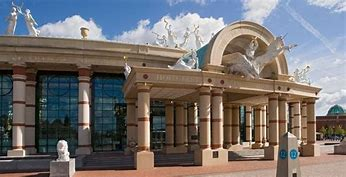
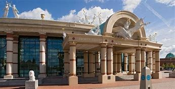

HOME THINGSTODO FOODANDDRINK SHOPPING WHERETOSAY
 

the trafford centre is really big and has got everyones favavourite brands and some visitors might not have discovered yet including Selfridges, Stradivarius, Pull & Bear, Victoria’s Secret, Primark and Khaadi. there is also a cinema and play areas And when hunger strikes visitors will be spoilt for choice with over 60 amazing restaurants including new additions Bill’s, Five Guys, LEON and wagamama. Coach groups who pre-book will receive an exclusive book of treats and discounts, and a meet and greet with the lovely customer services team. Let The Trafford Centre know if you’d like a behind the scenes guide, or a tour customised to your group manchester arendale When it comes to shopping it has to be Manchester Arndale. Find a huge selection of exciting shops from the leading high street names such as Apple, Monki, River Island and Topshop to lots of smaller, stylish specialists and food outlets - and all under one roof. Manchester Arndale is the Manchester city centre shopping centre! Located close to bus, tram and train networks it's easy to get to and, more importantly, easy to get from when you've got mountains of shopping to carry home.